Characters
The Legend of Zelda is a series that spans multiple eras and as such contains many characters. Some of these characters manage to persist throughout time, this page will display some notable characters and give a brief description of them
The Main Characters
LinkA courageous young lad clad in green. He wields the Triforce of Courage and the Master Sword. Using his wits and everlasting courage he endeavors to bring peace back to the land of Hyrule. While their are many heroes that go by the name Link, they all share one thing in common, the spirit of the hero. |
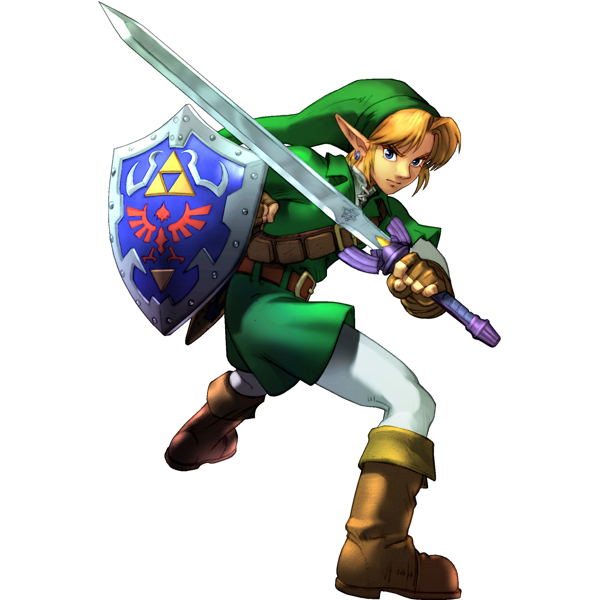 |
ZeldaThe Princess of Hyrule's royal family. She possesses the Triforce of Wisdom which enhances her existant supernatural abilities. Legends say that the Princess is a descendant of the Goddess herself. Zelda assists Link in defeating evil in whichever era it may reside. |
 |
GanondorfThe Evil King of Thieves, Ganondorf is the wielder of the Triforce of Power. With his part of the holy relic he has umatched physical prowess. The Triforce also grants him the ability to transform into the fearsome beast known as Ganon. Ganon's only weakness is holy weapons be it the arrows of light, or the Master Sword. |
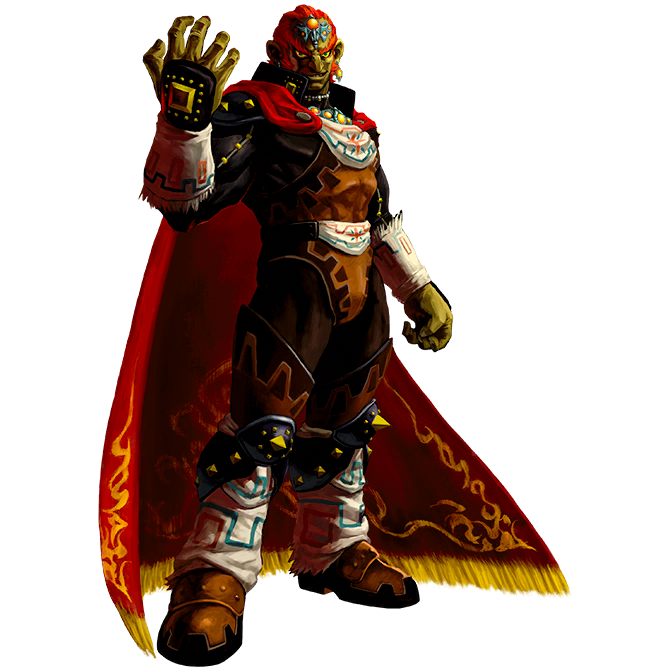 |
Recurring Side Characters
ImpaThe protector of the royal family and Princess Zelda's bodyguard. She belongs to the Shiekah tribe, a mysterious crew that protect the Royal family from the shadows. Like Zelda and Link, Impa has taken many forms, and her role is always to protect Zelda at all costs. |
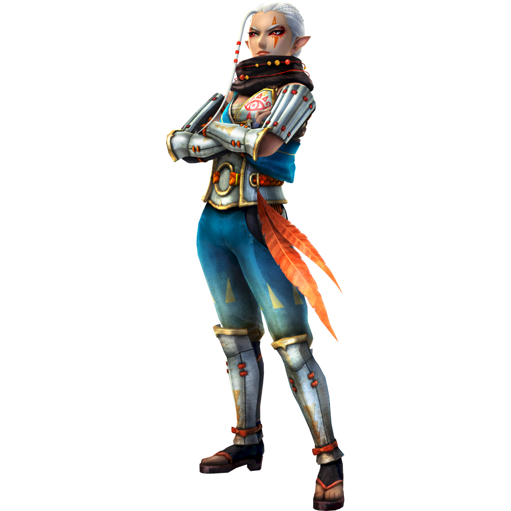 |
TingleA strange little 35 year old man. He believes he is the reincarnation of a fairy. While he may seem strange, he is an expert cartographer and he will aid Link with his mapmaking skills for a fee. |
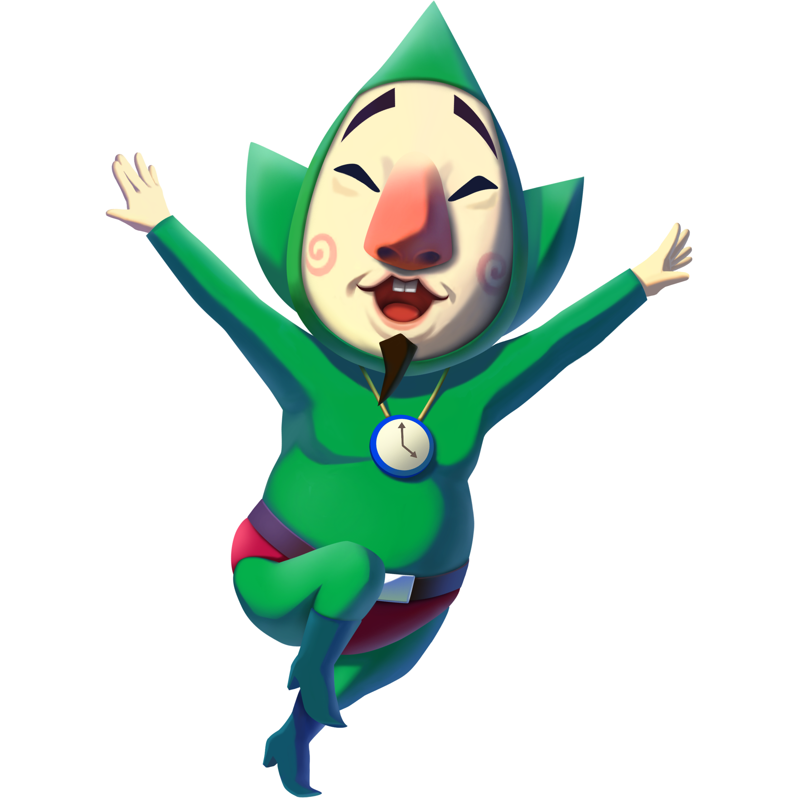 |
BeedleA traveling merchant with an affinity for beetles. He is willing to trade valuable elixers and potions in exchange for any beetles you may find on your journey. However if you refuse, he may just let his true colors show... |
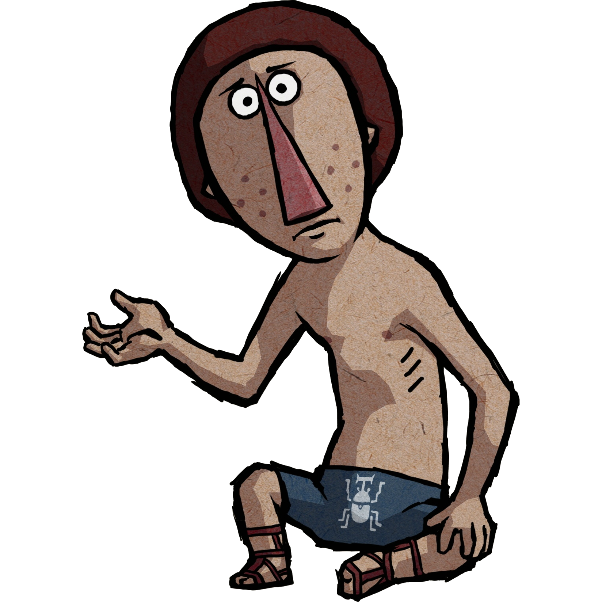 |
EponaLink's noble steed. While Epona is difficult to tame, she is one of the fastest and most powerful horses in all of Hyrule. Link was able to win her in a bet from Ganondorf's stableman whom intended to gift Epona to the King of Evil. |
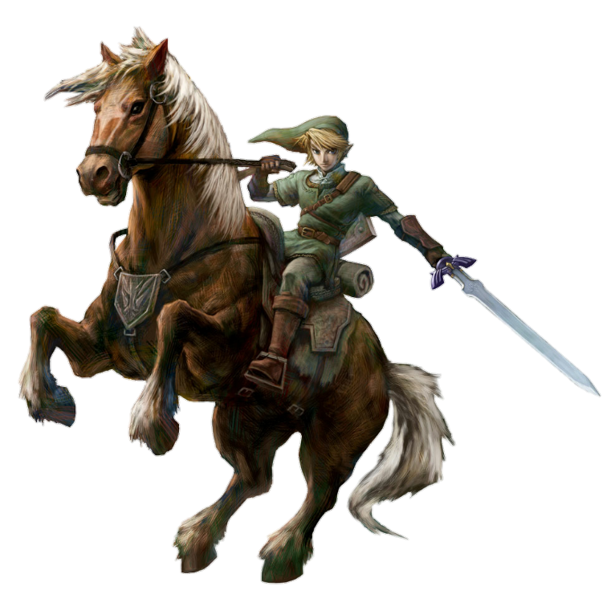 |
The Baddies!
BokoblinA small imp that isn't all that powerful. However if you are ambushed by a group of them you may be in trouble. Bokoblins are created by Ganon's evil magic and will raise from the dead after some time has passed. |
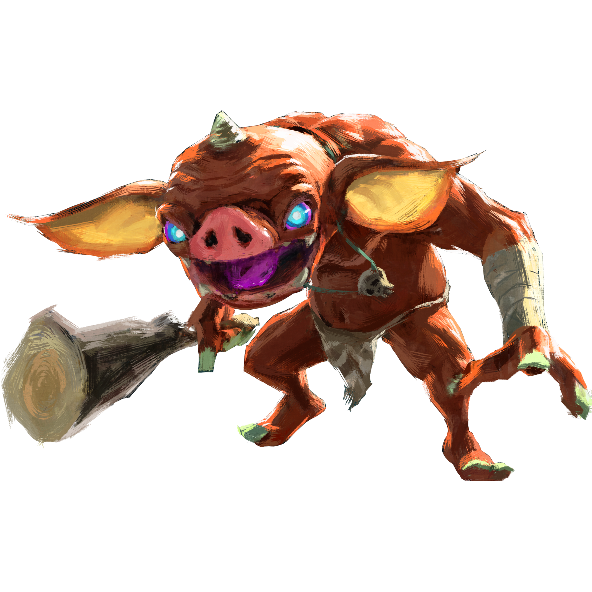 |
MoblinA large goblin like creature with fearsome physical strength. While they may not be too bright, they more than make up for it with their ferocity. Like bokoblins, moblins are creatures conjured by Ganon. They can sometimes be found in packs with Bokoblins. |
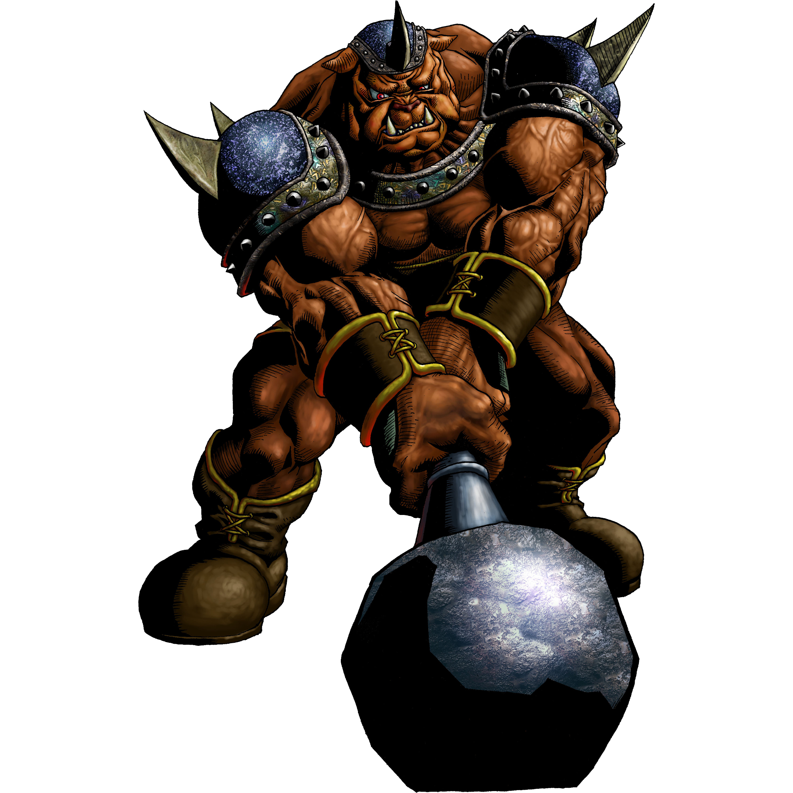 |
OctorokA medium-sized octupus-like creature that spits rocks at anything that comes close. While this creature may not be considered evil, it is certainley a nuisance to passerbys and our hero alike. Make sure to equip your shield when travveling close to their domain. |
|
TektiteA four-legged spider-like creature that hops around mountanous regions. These pests move rather fast and you must anticipate their leaps to avoid taking too much damage. |
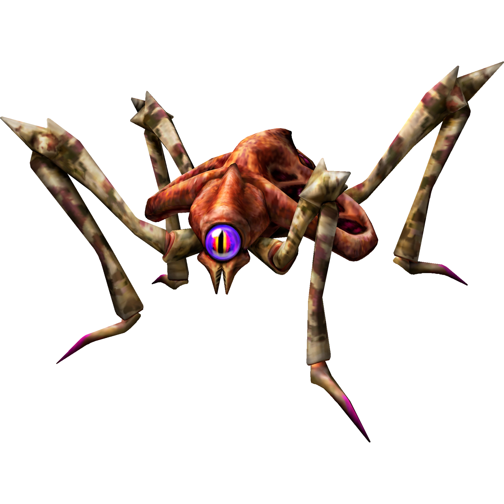 |
StalfosA skeletal warrior that wields a sword and shield. This warrior is no slouch and will certianley spell Link's doom if not careful. Defeat them quickly or they may just ressurect! |
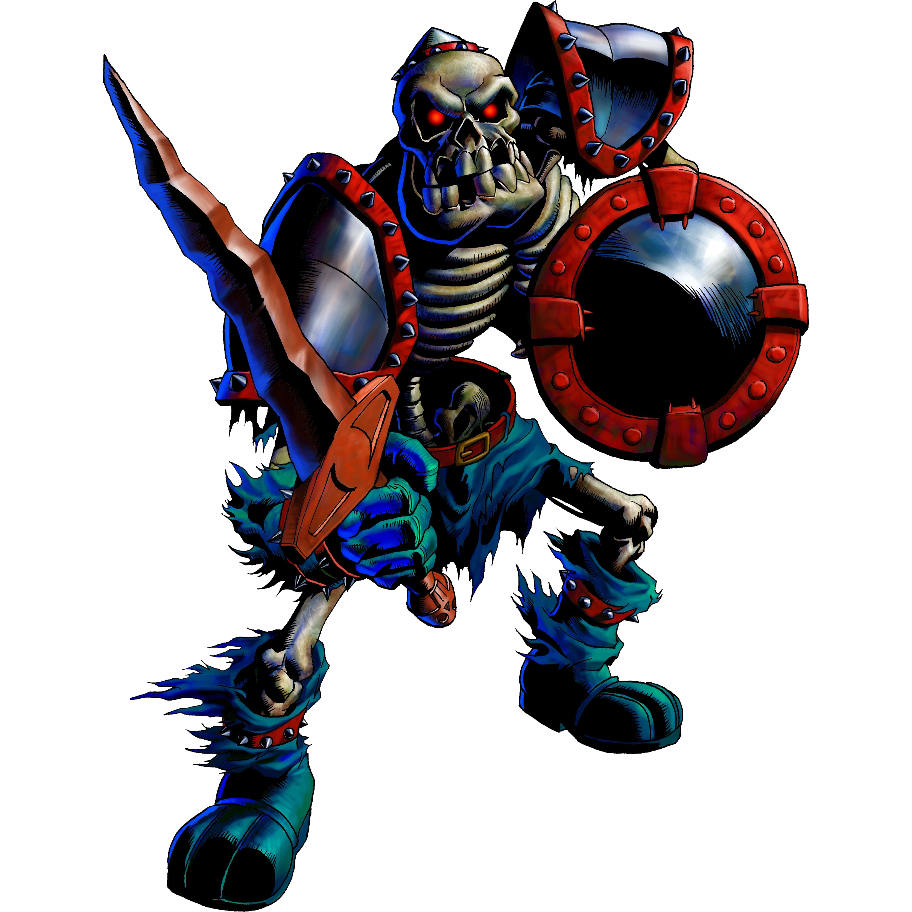 |
LizalfosHuman-sized tribal lizard. Although they may seem like stupid dinosaurs, Lizalfos are very skilled in weaponry and also display impressive agility. A lizalfos can jump right over our hero's head to strike him in the back if he is not careful. |
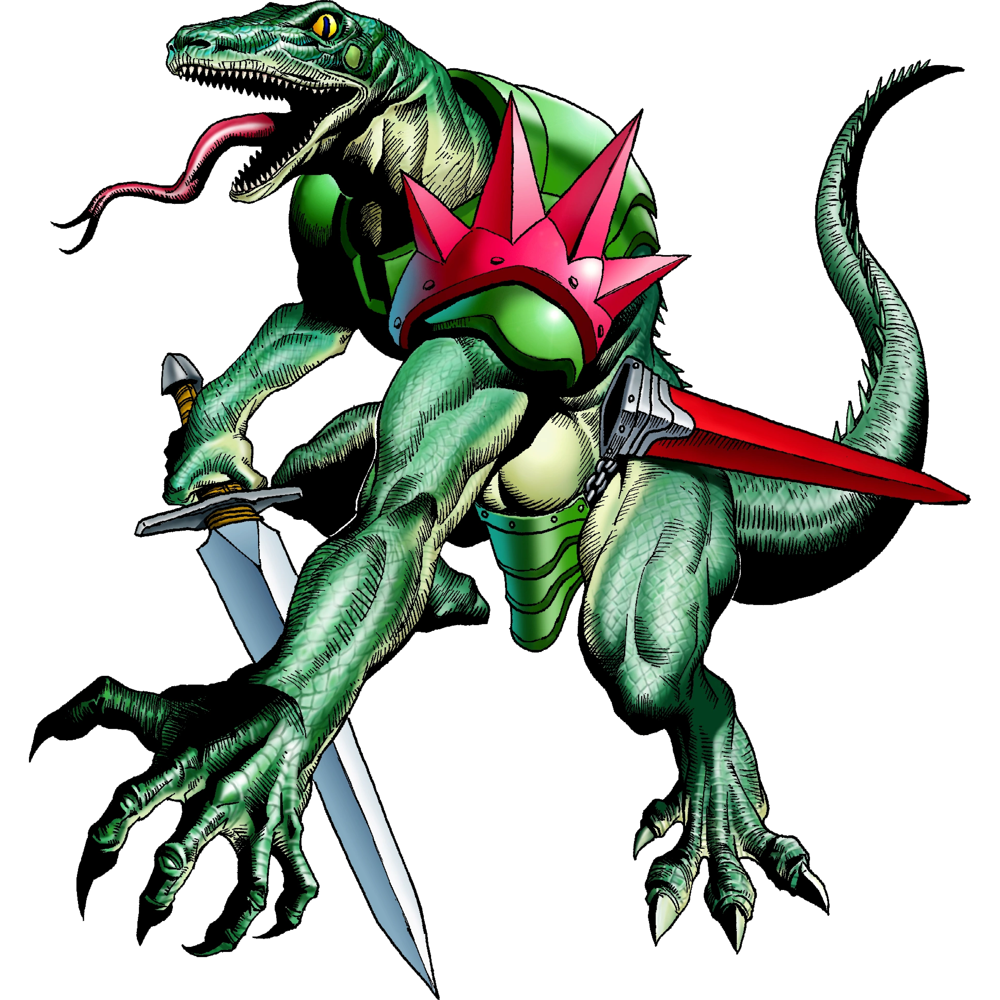 |